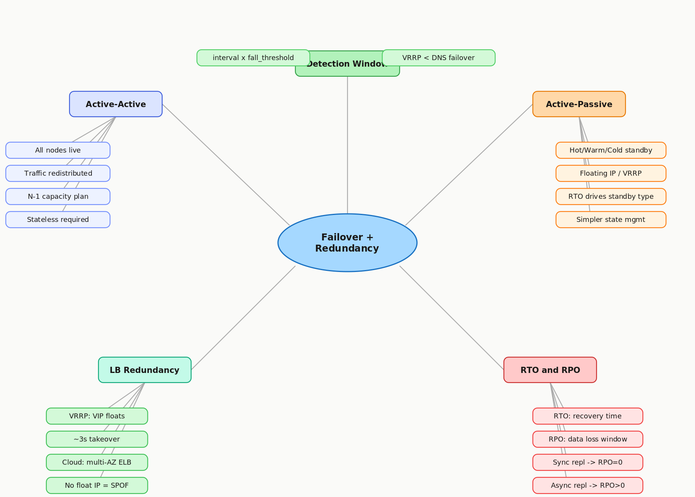

4.4 Failover & Redundancy
Active-Active · Active-Passive · VRRP · RTO & RPO
01 Goal of This Subtopic
- Be able to design a load balancing setup with no SPOF — including making the LB itself redundant via VRRP / floating IP.
- Distinguish active-active from active-passive and select the right one given a system's statefulness and cost constraints.
- Walk through any component's failure path: who detects it, what happens to in-flight traffic, and how the system recovers.
- Apply RTO and RPO to justify failover strategy choices (hot vs. warm vs. cold standby, sync vs. async replication).
02 What Mastery Looks Like
- Can define active-active and active-passive failover and state the availability, cost, and complexity trade-off of each without notes.
- Can design a load balancer setup with no SPOF — including how the LB itself is made redundant (floating IP / VRRP / anycast).
- Can walk through the failure path of any component: what fails, who detects it, what happens to in-flight requests, and how the system recovers.
- Can explain the difference between RTO and RPO and apply both to justify a failover strategy choice.
- Can identify when warm standby vs. hot standby vs. cold standby is appropriate based on RTO requirements.
03 Study Phases to Achieve Mastery
Goal: Read deeply enough that you could explain the concept without the doc.
- DDIA Chapter 8 — "Trouble with Distributed Systems" (Kleppmann) — fundamental limits of failure detection in async networks
- AWS Whitepaper: High Availability and Scalability on AWS — docs.aws.amazon.com/whitepapers/latest/real-time-communication-on-aws — practical failover patterns for cloud deployments
- Keepalived / VRRP Overview — keepalived.readthedocs.io — how virtual IPs float between load balancers on failure
- ByteByteGo: "How to Avoid Single Points of Failure" — blog.bytebytego.com — visual walkthrough of redundancy at each tier
- Read Sections 5–9 (Core Definition → How It Works) carefully — don't skim
- Re-read the Cheatsheet (Section 4) and try to recite it from memory after
Goal: Reproduce the knowledge in your own words without looking.
- Close the doc — write out the Core Definition from memory, then compare
- Explain First Principles out loud — what was the pain before redundancy patterns existed?
- Reconstruct the active-passive failover flow step by step from memory (heartbeat → dead interval → VIP claim → traffic resumes)
- Restate each Trade-off row in your own words — if you can't explain the cost, you don't own it yet
Goal: Connect to real systems and simulate interview scenarios.
- Verify each Real-World Example independently and add anything missed to My Notes
- Practice Interview Application out loud — trigger phrases + full trade-off statement verbatim
- Work through Common Misconceptions — explain WHY each is wrong, not just that it is
- Trace Relationships to Other Concepts without looking
Goal: Confirm you actually own it, not just recognize it.
- Answer every Self-Check Quiz question out loud without notes
- Recite the Cheatsheet from memory — if you can't, re-do Phase 2
- Tick off Mastery items — only if you can demonstrate on demand, not just if it sounds familiar
- Teach this concept for 2 minutes to an imaginary interviewer without hesitation or notes
04 Cheatsheet

05 Core Definition
06 Core Concepts
interval × fall_threshold. A 5s check interval with fall threshold 3 means up to 15s of user impact before traffic is rerouted.07 First Principles — Why Does This Exist?
In any sufficiently large system, hardware fails, processes crash, networks partition, and deployments introduce bugs — not as exceptional events, but as the steady-state background noise of operating at scale. Before redundancy patterns were formalized, a single server failure meant full service outage. The root problem is that no software can rescue itself after a crash: the rescuer must be external to the failing component. Redundancy externalizes the rescue — a separate, healthy node monitors the failing one and takes over when it stops responding. Failover is the mechanism that completes the handoff. Together, they transform single-point failure from a service outage into a brief, bounded degradation.
08 Mental Models
🎪 Model 1: The Understudy Actor
Active-passive is a Broadway understudy: the primary actor is always on stage; the understudy watches every rehearsal and knows every line, but never performs unless the star is incapacitated. The audience (traffic) sees the same show. Cost: you pay two salaries but get one performance at a time. Limit: the understudy still needs lead time to take the stage — faster handoff requires more expensive preparation (hot vs. cold standby).
🛣️ Model 2: The Two-Lane Highway
Active-active is a two-lane highway where both lanes carry traffic simultaneously. If one lane is blocked, traffic shifts to the other — it slows down but keeps moving. This model breaks the moment you forget that a two-lane highway at full two-lane demand is already at 100% capacity: one lane closure → gridlock. Capacity headroom for N-1 failure is non-negotiable in active-active designs.
📞 Model 3: The Floating Phone Number
A floating IP / VRRP is like a Google Voice number: the phone number never changes, but which physical phone it rings is reassigned on the fly. Clients call the same IP (VIP) and the routing infrastructure silently updates which machine answers. This is why VRRP failover is invisible to clients — unlike DNS failover, which forces every client to re-resolve and wait out the TTL.
09 How It Works — Mechanics
Active-Passive Failover Flow
- 1Primary LB serves all traffic. Secondary LB sends VRRP heartbeats to primary every 1s.
- 2Primary LB runs health checks on backends: e.g., HTTP GET
/healthevery 5s, fall threshold = 3. - 3Backend fails 3 consecutive checks → LB marks it down, connection draining begins (15–60s), then backend removed from pool.
- 4Primary LB itself fails → VRRP heartbeat stops → secondary waits
dead_interval(3 × 1s = 3s) → secondary claims the floating VIP. - 5Clients resume connecting to the same IP — entirely unaware of the LB switch. Recovery is transparent.
Active-Active Failover Flow
- 1Both LBs hold the VIP via anycast or DNS round-robin. Both simultaneously receive and route traffic.
- 2Each LB independently monitors backend health and updates its own routing table.
- 3Backend failure: whichever LB detects it removes it from its pool. Both converge within one check cycle.
- 4LB failure: TCP connections to the failed LB time out; clients retry and hit the surviving LB via anycast or DNS.
10 Real-World System Examples
| System | How This Applies | Notes |
|---|---|---|
| AWS ELB / ALB | Active-active across multiple AZs; each AZ runs independent LB nodes; cross-zone load balancing distributes traffic evenly | AWS abstracts VRRP — configure multi-AZ and AWS handles LB redundancy behind the scenes |
| HAProxy + Keepalived | Classic on-prem pattern: two HAProxy nodes share a VIP via VRRP (Keepalived); primary serves, secondary claims VIP if primary's heartbeat stops | VRRP dead interval ~3s; near-instant failover independent of DNS propagation |
| Nginx + Keepalived | Same floating-IP pattern as HAProxy; common in self-managed Kubernetes ingress setups | Keepalived supports health check scripts to demote primary if Nginx process dies even if host is alive |
| Google Cloud DNS with health checks | DNS-based failover: health check failure → DNS record automatically updated to backup IP | DNS TTL of 30–60s means 30–60s of client-cached stale records after failover triggers — slower than floating IP |
| MySQL with MHA / Orchestrator | Active-passive DB failover: replica promoted to primary on failure; VIP or DNS updated to new primary | RPO depends on sync vs. async replication; async replication can mean seconds of data loss on abrupt primary failure |
11 Trade-offs
| ✅ Benefit | ❌ Cost / Limitation |
|---|---|
| Active-active: full resource utilization, seamless failover | Requires stateless or replicated state; capacity must be headroom-aware (N-1 capacity planning mandatory) |
| Active-passive: simpler state management, no split-brain risk | Idle standby wastes 50%+ of resource cost; failover takes longer (VRRP or DNS flip) |
| Floating IP (VRRP): near-instant, client-transparent LB failover | Only works on L2-adjacent nodes (same subnet/VLAN); not viable across datacenters or cloud regions |
| DNS-based failover: works globally across regions | DNS TTL means 30–300s of in-flight requests still hitting the dead node after failover triggers |
| Hot standby: RTO of seconds | Doubles hardware/cloud cost; sync replication required for RPO=0, adding write latency |
| Cold standby: minimal cost | RTO of minutes to tens of minutes; unacceptable for latency-sensitive or transactional services |
12 Interview Application
When an interviewer asks / says:
- "What happens when this load balancer goes down?"
- "How do you ensure high availability for the frontend tier?"
- "What's your recovery time if the primary database fails?"
- "Walk me through a failure scenario — how does your system recover?"
What you say / do:
When asked about availability, sweep each tier top-to-bottom: load balancer → application servers → database. For the LB, name VRRP/floating IP (on-prem) or multi-AZ ELB (cloud). For app servers, state active-active with health-check-based eviction. For database, name active-passive with an explicit RTO/RPO. This structured sweep signals system-level thinking rather than ad-hoc fixes.
The trade-off statement (memorize this pattern):
13 Common Misconceptions & Gotchas
14 Relationships to Other Concepts
| Relationship | Concept | Connection |
|---|---|---|
| Builds on | 4.3 Health Checks & Failure Detection | Failover can't trigger until a health check detects the failure. Detection latency = interval × fall_threshold bounds the fastest possible failover time. |
| Enables | 4.7 Global vs. Local Load Balancing | Multi-region failover is the global-scale extension of the same active-passive / active-active patterns, with DNS-based routing and anycast replacing VRRP. |
| Tension with | 2.7 Stateless vs. Stateful Systems | Active-active failover is trivial for stateless services and dangerous for stateful ones. This is why stateless design (Topic 3) is the prerequisite for clean, scalable failover. |
15 Self-Check Quiz
16 Further Reading
Why failure detection in async networks is fundamentally bounded — the theory behind why failover always has a non-zero detection window
docs.aws.amazon.com/whitepapers/latest/real-time-communication-on-aws — practical failover architecture patterns for cloud deployments
keepalived.readthedocs.io — canonical reference for VRRP-based floating IP failover; covers the full VRRP state machine
blog.bytebytego.com — visual, interview-ready walkthrough of redundancy patterns at each tier